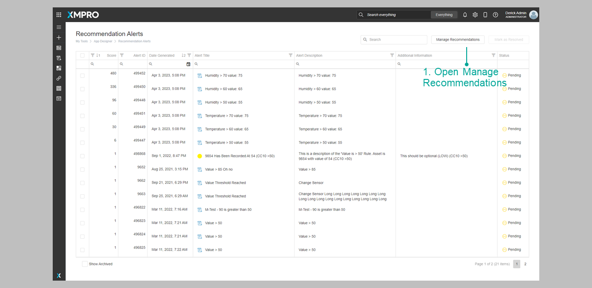
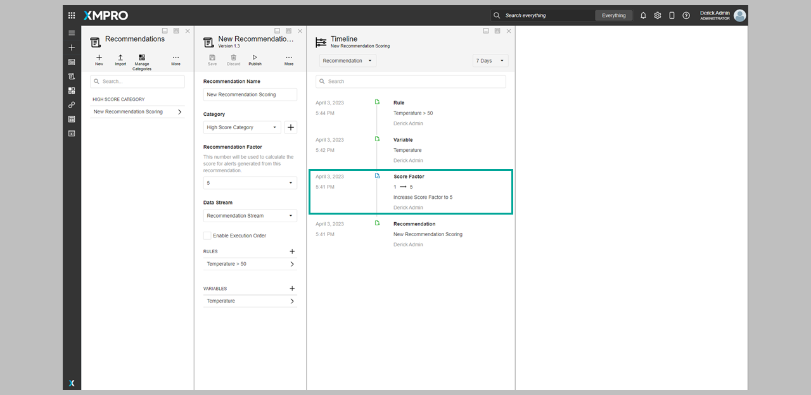

Scoring
v4.2.0
What is Alert Ranking and Alert Scoring?
When setting up a Recommendation, authors are able to influence the order in which Alerts will be shown. Ranking and Scoring help the alert recipient prioritize recommendations according to their importance.
What is the difference between Alert Ranking and Alert Scoring?
Alert Ranking allows users to rank a recommendation as High/Medium/Low.
Alert Scoring is an alternate fine-tuning of the alert ranking by specific factors such as recommendation, category, rule, and an optional value from the Data Stream.
By allowing the author to assign a calculated score to an Alert instead of a ranking, you can have even more detailed control over its importance level.
This Score also helps the alert recipient to understand its relative importance.
{% hint style="info" %} Authors still have the option to use Alert Ranking instead of Alert Scoring if they prefer. {% endhint %}
How is the scoring calculated?
This feature allows recommendation authors to assign numerical values (1-10) to various aspects during configuration. These values are then multiplied, resulting in an alert score.
score = recommendation factor * category factor * rule factor * optional factor
The score is calculated at the time the alert is generated and is not recalculated should any of the factors be updated.
Where are scoring values added?
The values used to score an Alert could be configured in these different areas:
- Recommendation – assesses the significance of the recommendation itself

- Recommendation Category – evaluates the importance of the recommendation's category

- Recommendation Rule - when managing a rule within a recommendation

- Recommendation Optional - an Optional Rule Factor value retrieved from the Data Stream.
Viewing the recommendation scoring
When viewing the Recommendation Alerts list, The Recommendation Scoring is displayed on the Score Column, and the Alerts are arranged in a descending order based on their Scoring.

You can also view the Scores using the Score Factor Matrix. To open the Score Factor Matrix:
- Open Manage Recommendations
- Click on “More” ellipses
- Click the "Score Factor Matrix" button


{% hint style="info" %} This table only shows an estimate as the Optional Factor of the Recommendation could not be determined until the Alert is generated. {% endhint %}
Viewing the Score Factor history on a timeline
The changes made on a Score Factor Recommendation can be viewed on a timeline in the following areas:
- Category Timeline – when observing score factor changes within this timeline.
- Recommendation & Rule Timeline – when viewing score factor changes within this timeline.

Last modified: May 24, 2025